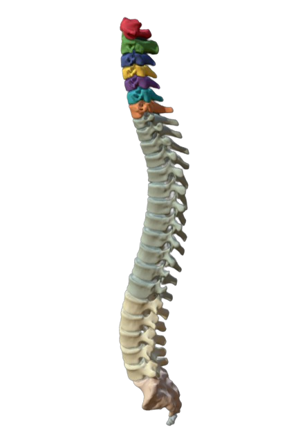

Research Projects
Investigating Diversity in Responses to Artwork through Latent Representations of Language Captions
From July to August 2021, as a Lumiere Research Scholar, I mentored under Samuel Showalter, a PhD student at UC, Irvine and developed an LSTM beta-VAE model to quantify the subjective topic of sorting works of art based on the diversity of response they elicit using captions from the ArtEmis dataset.
We found that analytical cubism, synthetic cubism, pointillism, contemporary realism, and action painting were the genres of art that elicited the most diverse responses. You can find the full paper [here] (Submitted to the Stanford Undergraduate Research Journal) and the source code [here].
Network intrusion detection: a comparative study of four classifers using the NSL-KDD and KDD'99 datasets
Maintaining online security is an essential task today as the internet becomes accessible to more people worldwide. Hence, research in the area of developing accurate and efficient network intrusion detection systems is valuable.
For this research project, we evaluate four popular models used for network intrusion detection on the KDD'99 and NSL-KDD datasets (decision tree, multi-layer perceptron, random forest, and stacked autoencoder). Further, we discuss an effective data preprocessing strategy and list important features from the datasets using the most accurate model.
We found that the random forest (RF) model provides the most accurate results and for both datasets- count, srv_rate, and dst_bytes are the top three features.
I presented this paper at the International Conference on Artificial Intelligence, Computational Electronics and Communication System (AICECS 2021) from the 28th to 30th of October and won the best paper award. The paper is accepted to the IOP: Journal of Physics (a conference proceedings journal) and can be found [here].
Automatic Cobb Angle Estimation from X-Ray Images Using Deep Learning Methods
Adolescent idiopathic scoliosis (AIS) is the most common type of scoliosis (abnormal curvature of the spine) affecting children between the ages of 10 to 18. The most common method to diagnose and help treat AIS is by measuring Cobb angles of the spine using x-ray images. Often, this process is done manually or at best, semi-automatically.
Presently, I am working under faculty member Dr. Anu Shaju Areeckal to develop a novel method to automatically and accurately measure Cobb angles using chest x-ray images.

